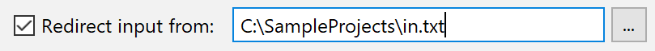

Use the Run/Debug Configuration dialog to automatically submit input values
from a text file instead of typing them in the Run tool window.
To enable redirecting, select the Redirect input from checkbox and specify the
path to the target file.
